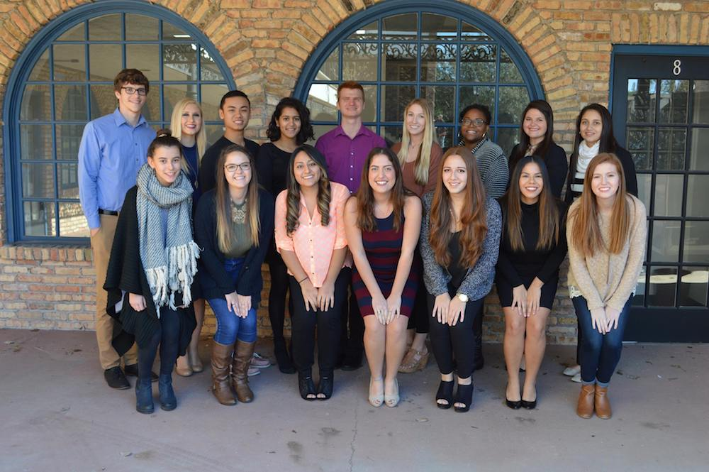

Experiences
The Children's Campaign - Database Administration Resident
The Children's Campaign is a local non-profit organization that aims to bring issues that revolve around children into light so laws can be put in place to protect children.
- Lead for a semester teaching and on boarding the new apprentice that is to take over my position
- Manage online database tools Luminate and Mailgun for over 200,000 constituents
- Utilize Microsoft Access to sort through 9+ million records from all registered voters in Florida
- Streamline data deduping process using Microsoft Access to cuts down deduping time by at least 50%
- Create Excel data reports with data collected from our constituents
- Collect data from mailing list analytics and document to files within our servers
Proper Channel - Marketing/Analyst Intern
- Researched and compiled 20+ articles that relates to the company. Generated increased traffic on the company website
- Published articles as landing pages so they can be later used for AB testing
- Utilize WordPress for content marketing, attracted viewers from different social media platforms such as Facebook, LinkedIn, Twitter, etc
- Researched and Targeted specific professions that would benefit from our services in order to pinpoint where our market lies. Conducted interviews to further expand on this point
Taipei International Convention Center - Sales and Customer Service
- Worked as an English-speaking salesman in Taipei International Convention center
- Helped increase sales to an otherwise unopened market for Non-Mandarin speakers
- Translated for at least 10 customers who didn’t speak Mandarin
- Handled customer service for both Mandarin and Non-Mandarin speakers